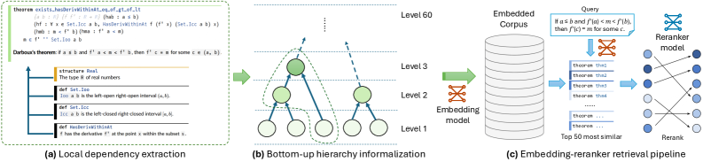
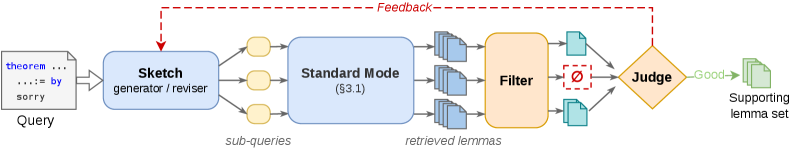

LeanSearch v2 is a global premise retrieval system over Mathlib for Lean 4 theorem proving.
Abstract
Proving theorems in Lean 4 often requires identifying a scattered set of library lemmas whose joint use enables a concise proof – a task we call global premise retrieval. Existing tools address adjacent problems: semantic search engines find individual declarations matching a query, while premise-selection systems predict useful lemmas one tactic step at a time. Neither recovers the full premise set an entire theorem requires. We present LeanSearch v2, a two-mode retrieval system for this task. Its standard mode applies a hierarchy-informalized Mathlib corpus with an embedding-reranker pipeline, achieving state-of-the-art single-query retrieval without domain-specific fine-tuning (nDCG@10 of 0.62 vs. 0.53 for the next-best system). Its reasoning mode builds on standard mode as its retrieval substrate, targeting global premise retrieval through iterative sketch-retrieve-reflect cycles. On a 69-query benchmark of research-level Mathlib theorems, reasoning mode recovers 46.1% of ground-truth premise groups within 10 retrieved candidates, outperforming strong reasoning retrieval systems (38.0%) and premise-selection baselines (9.3%) on the same benchmark. In a controlled downstream evaluation with a fixed prover loop, replacing alternative retrievers with LeanSearch v2 yields the highest proof success (20% vs. 16% for the next-best system and 4% without retrieval), confirming that retrieval quality propagates to proof generation. We have open-sourced all code, data, and benchmarks. Code and data: https://github.com/frenzymath/LeanSearch-v2 . The standard mode is publicly available with API access at https://leansearch.net/ .
Problem
Proving theorems in Lean 4 often requires identifying a scattered set of library lemmas whose joint use enables a concise proof. Existing tools either find individual declarations matching a query or predict useful lemmas one tactic step at a time, but neither recovers the full premise set an entire theorem requires.
Approach
LeanSearch v2 operates in two modes. Standard mode uses a hierarchy-informalized Mathlib corpus (built with Jixia, a static analysis tool for Lean 4) paired with an embedding-reranker pipeline for single-query retrieval. Reasoning mode targets global premise retrieval through iterative sketch-retrieve-reflect cycles, decomposing a target theorem into sub-queries and assembling the supporting lemma set via structured feedback loops.

Figure 2: Standard mode pipeline. (a) Jixia extracts each declaration and its dependencies from Mathlib. (b) Declarations are informalized bottom-up so that each description can draw on already-informalized dependencies. (c) Queries and corpus items are embedded for cosine-similarity retrieval; a reranker refines the top candidates.

Figure 4: Reasoning mode pipeline. The sketch generator decomposes a target theorem into sub-queries. Each sub-query is sent to standard mode (§ 3.1 ), and a filter vets the retrieved candidates, potentially returning an empty set ( \varnothing ). The judge inspects all filtered outputs and either accepts the supporting lemma set or sends structured feedback (red dashed arrow) to the sketch revise
Results
Standard mode achieves nDCG@10 of 0.62 vs. 0.53 for the next-best system without domain-specific fine-tuning. Reasoning mode recovers 46.1% of ground-truth premise groups within 10 candidates on a 69-query benchmark, outperforming strong reasoning retrieval systems (38.0%) and premise-selection baselines (9.3%). In downstream proof generation, replacing alternative retrievers with LeanSearch v2 yields 20% proof success vs. 16% for the next-best system.